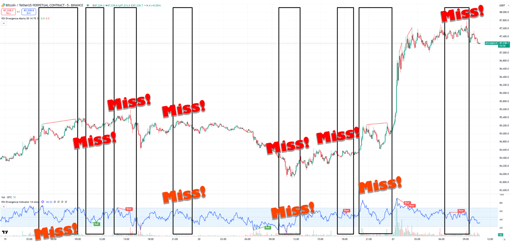

A maioria dos indicadores de divergência RSI desenvolvidos por outras pessoas perde alguns sinais. Acima estão os dois indicadores de divergência RSI mais usados no TradingView, onde você consegue ver claramente os sinais perdidos.
A maioria dos indicadores — até em plataformas como TradingView —perde muitas divergências RSI, obrigando você a ficar olhando o gráfico o tempo todo para pegar elas a tempo. E mesmo quando detectam uma, o alerta só dispara depois que a divergência já se formou por completo.
DivAlarm captura todas as divergências RSI — sem perder nenhuma. Ele pode até detectá-las enquanto ainda estão se formando, antes de a divergência estar totalmente completa.
Você pode ajustar condições detalhadas para cada timeframe — como limiares de RSI, níveis de preço, rompimentos das Bandas de Bollinger ou até divergências RSI em andamento em outros timeframes.
Isso permite filtrar apenas os sinais de divergência RSI mais eficazes.
Você pode capturar divergências RSI com alta probabilidade de conclusão — mesmo antes de estarem totalmente formadas. Quando uma divergência RSI está se formando em um timeframe maior, você pode receber um alerta se o preço reverter em um timeframe menor.
Além da divergência RSI, alvos de preço, aproximações de suporte e resistência, rompimentos de EMA e de Bollinger, e mudanças de Supertrend — você pode configurar tudo facilmente por timeframe e receber alertas poderosos para cada um.
Para cada sinal, você pode personalizar exatamente como o alarme se comporta.
Há cinco modos para escolher:
A. Forçar alarme (Loop) — toca continuamente até você parar manualmente, mesmo no modo silencioso.
B. Forçar alarme (Uma vez) — toca uma vez, ignorando o modo silencioso.
C. Seguir configurações do celular — usa as configurações normais de som do seu dispositivo.
D. Apenas vibrar — aciona vibração sem som.
E. Modo silencioso — sem som nem vibração.
Você também pode adicionar qualquer som que quiser e usá-lo como toque do alarme.
No modo Pro, o usuário recebe um endereço de webhook exclusivo — permitindo receber alarmes poderosos no celular que furam o modo silencioso, combinar vários sinais para criar os seus próprios e até executar ordens automáticas.
Quando uma mensagem de alerta TradingView contém palavras-chave específicas, o alarme correspondente ou a ordem automática é acionada automaticamente.
Convide pessoas e ganhe recompensas — toda vez que alguém que você convidou renovar a assinatura mensal, você receberá 1–2 USDT por pessoa, pagos diretamente na sua carteira.
Ao se cadastrar, você receberá seu próprio código de indicação e link de assinatura exclusivos.
Se alguém assinar usando seu código ou seu link, essa pessoa ganha US$ 0,90 de desconto no primeiro mês e US$ 0,30 de desconto em todos os meses seguintes.
Enquanto isso, você receberá 1–2 USDT a cada pagamento de renovação que ela fizer:
0–20 indicações: 1 USDT por pessoa
21–50 indicações: 1,25 USDT por pessoa
51–100 indicações: 1,5 USDT por pessoa
101–200 indicações: 1,75 USDT por pessoa
201+ indicações: 2 USDT por pessoa
Convide 300 pessoas e você pode ganhar até 600 USDT por mês!
É uma nova fonte de renda que continua entrando — mesmo quando você não está trabalhando. À medida que seu número de indicações cresce, você também ganha a capacidade de enviar comunicados exclusivos com qualquer conteúdo que escolher, apenas para os usuários que você convidou.